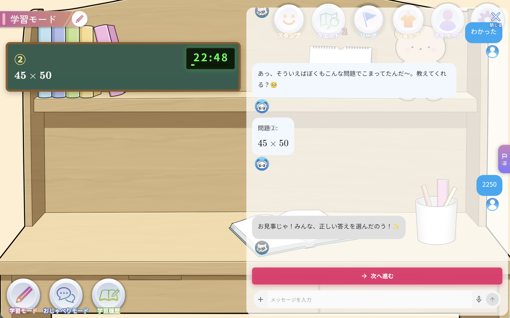

宿題を出したのに、やってこない
「あとでやる」と言ったまま、家庭で学習を行わず、次の授業を迎えてしまう。
小学4〜6年生 × 個別指導塾・自立学習型塾
ムチモンAI学習伴走サービス
会話で家庭学習への取り組みを促し、レポートで次の声かけにつなぐ。
家庭で学習を行わない生徒に、AIキャラクターが宿題への取り組みを促します。講師には、授業外の生徒を理解する手がかりを。ムチモンが、家庭と教室のあいだをつなぎます。
個人塾・中小規模塾向け ／ 試験導入のご相談受付中


新しい教材ではなく、塾の伴走力を拡張するサービス。
試験導入を相談するこんな課題はありませんか？
宿題を出したのに、やってこない。家庭で学習を行わず、次の授業を迎えてしまう。ムチモンは、そんな生徒への働きかけと、講師による授業外のフォローを支えます。
「あとでやる」と言ったまま、家庭で学習を行わず、次の授業を迎えてしまう。
取り組みや会話の様子が見えず、次の支援につなげにくい。
授業準備や指導で忙しく、授業外のフォローまで手が回らない。
毎日の「勉強しなさい」が、家庭の負担になっている。
生徒と講師、両方の伴走者に

キャラクターとの会話で宿題への取り組みを促し、解説・類似問題で学習をサポート。家庭で学習を行う習慣づくりを支えます。
学習の記録と会話の様子をレポートに。授業外の生徒の姿を知り、一人ひとりに合ったフォローにつなげます。
家庭と教室をつなぐ、5つのステップ
気軽なおしゃべりを、アプリを開くきっかけに。
いつもの宿題を撮影。解説や類似問題で家庭学習を支えます。
取り組んだ内容と会話の様子を、講師向けにまとめます。
レポートと声かけ例を手がかりに、生徒をフォロー。
「見てもらえている」という実感を、次の取り組みへつなげます。
講師専用の管理画面
学習時間や教科だけでなく、会話の話題や利用状況も把握。週間サマリーと声かけ例が、生徒に寄り添うフォローを支えます。
1週間の学習のまとめ
算数・数学 ／ 小数の計算
勉強の合間のおしゃべりも、理解の手がかりに。
「小数の計算に取り組んだんだね。どんなところが難しかった？」
いつ、どのくらい取り組んでいるか。
家庭での学習内容を把握。
学習記録だけでは見えない生徒の様子も。
一週間の様子をまとめて確認。
次の授業で、何を話すかのヒントに。
他サービスとの違い
いつもの教材と併用しながら、宿題への取り組みと家庭学習の継続、講師によるフォローを支えます。
問題を最適化
正誤・習熟度を把握
進捗を可視化
時間・進捗を把握
サービスの役割を整理した比較です。各サービスの機能は提供元により異なります。
教室全体に生まれる価値
家庭での取り組みを手がかりに、個別の声かけとフォローを。
キャラクターと講師の伴走で、一人で抱え込まない家庭学習へ。
保護者の声かけだけに頼らない、家庭学習の仕組みづくりを。
Pilot Program
宿題を出してもやってこない、家庭で学習を行わない小学4〜6年生への対応に悩む塾へ。いつもの教材と併用しながら、生徒の取り組みと講師のフォローに合うかをお試しください。
価格・導入条件については、お問い合わせください。